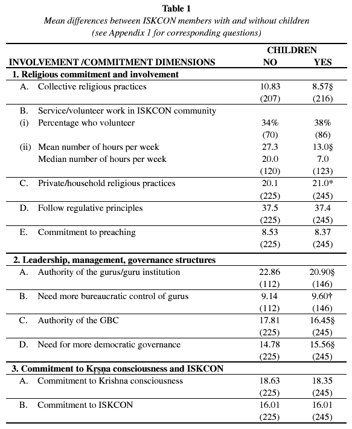

|
|
| SECTION GUIDE | |
|
·
|
Issues On-line |
|
·
|
Journal Information |
|
·
|
Subscribe to ICJ |
|
·
|
ICJ Home |
|
·
|
Home |
|
Vaisnava Family and Youth Conference The Changing Face of ISKCON: Family, Congregationalism, and Privatisation |
|
|
Long-term ISKCON watcher, Burke Rochford, sets the scene for the Vaisnava Family and Youth Conference by outlining the relevant trends in ISKCON membership. He notes how over the last two decades ISKCON has become a far more family-oriented and household-based, and therefore less temple-centred, congregation. Drawing on his seminal Prabhupada Centennial Survey, he looks at how this demographic shift affects members' commitment to the organisation and to spiritual practice. How importance is collective and individual spiritual practice to ISKCON's householder members? What are their attitudes to ISKCON authority and how has their commitment to ISKCON and Krsna developed? The answers in this paper may chal-lenge some preconceptions.
This paper considers change within ISKCON since the mid-1980s - specifically, the ascendancy of the nuclear family and the corresponding demise of communalism. Some within the movement have suggested that this change has been detrimental to ISKCON and its membership, that members' religious commitments and levels of involvement have declined as householder life has expanded. This decline is seen as undermining individual religious advancement and the viability of ISKCON as a religious organisation. The findings and discussion presented here suggest that ISKCON in North America has changed dramatically as a religious movement and that the growth of householder life has brought about new patterns of individual religiosity. As ISKCON has progressed toward becoming a congregational movement of independent householders, the private dimensions of Krsna consciousness have gained prominence at the expense of collective religious practice and ISKCON involvement. In essence, this change has not meant a decline in religious practice and involvement, but rather a shift in the ways householders express their religiosity. Given the developments I discuss here, it seems appropriate to suggest that the home, and householder life generally, be elevated from its longstanding 'inferior' status. Such a development would be consistent with trends in other religious groups and traditions. As a Hassidic Jewish woman from the Crown Heights section of New York remarked,
Indeed, the household, whether intentionally or not, has become the very centre of religious life within ISKCON's North American communities and throughout much of the ISKCON world. (Rochford 1995a, 2000) Householder life and organisational change in ISKCON Marriage and family life have played key roles in the development of ISKCON in North America. During ISKCON's beginning years in the late 1960s and early 1970s, there were relatively few married members, and fewer still who had families. Even in 1980, there was about an equal percentage of single renunciates and married householders within ISKCON. Only about one in four had children at that time. By the early 1990s, however, ISKCON had become a householder movement, with the large majority of its membership married and having children. 1 (Rochford 1995a, p. 156; Rochford 1997, 1998a) Up until the early 1980s, ISKCON's management retained considerable control over married and family life. (Rochford 1995b, 1997) Indeed, virtually all ISKCON members were subject to the control of the movement and its largely renunciate leadership. As Ravindra Svarupa Dasa (2000, p. 37) has argued, the ability of ISKCON's leaders to control people within the movement was based largely on the latter being financially dependent. Yet marriage and family life were subject to still further control through ongoing preaching meant to disparage marriage as a 'dark well' spiritually, suitable only for those unable to live a strict Krishna conscious lifestyle. (Ravindra Svarupa Dasa 1994, Rochford 1997) Marriage was thus devalued and involved a loss of status, especially for men. As ISKCON's economic fortunes began to change after 1976, when book distribution declined dramatically, (Rochford 1985, p. 175) ISKCON's social organisation changed with it. Lacking adequate financial resources to sustain its collective way of life, communalism gave way to the nuclear family as the basis of ISKCON's social organisation. Associ-ated with this were a number of related changes: (a) most parents were forced into the outside labour market to seek employment; (b) children, previously cared for in asrama-based gurukulas, were returned to the care of their parents; and, (c) householders increasingly lived independently of ISKCON, forming enclave communities near an ISKCON temple. (Rochford 1995b, 1997) Accompanying these changes was the ongoing crisis involving ISKCON's leadership and the resulting demise of religious authority attributed to the gurus and the GBC. (Rochford 1995b, p. 168-71, Rochford 1998a, 1998b) Moreover, renunciate leaders often claimed disinterest in householder affairs and the struggles of devotee parents and their children. By the mid to late 1980s, ISKCON had become a very different movement from what it had been during its early years. Congregationalism had displaced ISKCON's previous sectarian structure and way of life. Accompanying this change was a shift in the ways that devotees involved themselves in Krishna consciousness and ISKCON. It is these latter issues and their implications that frame the interests of the present paper. I want to briefly present a number of findings suggestive of the new ISKCON, one that is defined by householder life as the very centre of Krsna consciousness. Data and methods Findings presented in this paper are based on data from the Prabhupada Centennial Survey. This survey was conducted from 1994 to 1995 with approximately 2000 respondents from 53 different countries. (see Rochford 1998a, 1999) The findings reported below include full-time temple devotees and congregational ISKCON members residing in the United States and Canada. Appendix 1 details the dimensions of commitment and involvement, as well as the variables and specific measures used in the present investigation. Virtually all of these dimensions and measures were used in my analysis of the Prabhupada Centennial Survey data as reported to the GBC in November 1998. The specific details relating to scale construction can be found in the original GBC report (see Rochford 1998a). Findings Collective religious life As shown in Table 1, householders with children are significantly less involved in ISKCON's collective religious life than devotees without children, married or unmarried (see Appendix 1, 1.A. for specific measures). The higher mean score for those without children indicates that they attend the morning temple programme more often than those with children. The explanation here is largely a matter of availability; parents with children simply find it more difficult to regularly attend early morning programmes in the temple. With get-ting children off to school, getting ready for work and the like, parents find it difficult to attend the morning programme in the temple. Table 1  Note: Table 1, with two exceptions, presents mean
scores for the above dimensions comparing devotee respondents with
and without children. Some numerical scores on the right side of
the table have a attached to them. These symbols are used to indicate
statistical significance of varying degrees. Mean scores reported
without these symbols indicate that there was no meaningful statistical
difference found between the mean scores reported for a particular
dimension (e.g., follow the regulative principles). The number in
parentheses under each of the mean scores represents the total number
of respondents used in the calculation. Voluntary service Parents contribute less time doing volunteer service in their local ISKCON community than devotees without family obligations. Although a near equal percentage of devotees with and without children contribute some unpaid work to their local ISKCON community, those without children contribute far more time. If we consider both the mean and median number of hours of volunteer work committed weekly, devotees without children contribute far more (see Table 1). Here again, the explanation lies with the fact that parents are working, tending to the needs of their children and households, and, as we will see, tending to their own individual religious practices. Individual religious practice There are no major differences in individual religious practice between devotees with children and those without. In fact, parents with children are more involved in a variety of private/individual religious practices such as chanting, offering food, reading Prabhupada's books, listening to tapes of Prabhupada, and holding worship services at home. As can be further seen in Table 1, those with and without children follow the four regulative principles equally. As the findings suggest, family life in no way diminishes individual religious practice. While family life clearly limits collective religious practice, it has no apparent adverse affects on individual religiosity. Rather than going to the temple in the morning to chant their rounds or to attend arati, many householders reproduce this worship within their households with members of their family and perhaps friends. Worship in this sense has become increasingly privatised. The temple is no longer the primary place where devotees worship and otherwise conduct their daily religious practice. Preaching Many have commented about the apparent lack of preaching and book distribution occurring in North America. Implicitly, householders are often blamed for having lost the preaching spirit. Yet when we compare parents and non-parents, we find little difference between the two with respect to commitments to preaching (see Appendix 1, 2.E. for specific measures). It is true, however, that 58% of those without children, as opposed to 48% of those with children, disagree with the statement, 'I have little desire to go out in public and distribute books and preach'. Yet preaching itself has undergone change as ISKCON has increasingly become a congregational movement. Preaching is no longer confined to book distribution in public loca-tions. Rather, preaching today is more likely to occur in the workplace and other less public settings. Over 50% of those with and without children say that they 'actively preach to non-devotees at work and/or as part of [their] daily routine'. Moreover, nearly two-thirds of those employed in non-devotee work environments reveal their identity as Krsna devotees to their co-workers. What some have called the failure to preach, in fact, represents a shift in the style and location of preaching. Preaching now occurs more frequently through social relationships in the workplace and in other more private and less visible locations. As such, preaching remains largely out of sight of leaders and other ISKCON members. Given this invisibility, it is not feasible to award this form of preaching the equivalent of sankirtana scores to be read out and publicly acknowledged during the morning programme. Also less acknowledged is the ongoing preaching work performed by parents as they train their children in the religious values, practices, and lifestyle of Krsna consciousness. Too often this work has been taken for granted, yet for most parents this represents the most significant activity they perform, not only for their children but potentially for ISKCON as well. Authority As shown clearly in Table 1, parents are far more likely to challenge the authority of the gurus and the GBC than devotees without children (see measures in Appendix 1, 2.A and C). The very institutions that embody religious authority within ISKCON (apart from Prabhupada) have been subject to serious questioning and accorded little trust and respect by ISKCON's membership generally (see also Rochford 1998b, 1999). But as the findings suggest, those with children are far less likely to accept the authority of the GBC and the guru institution as it has emerged following Prabhupada's disappearance. Given this lack of trust, devotee parents are far more likely to favour a more democratic GBC structure and greater organisational controls on the gurus and the guru institution, as demonstrated in Table 1 (see Appendix 1, 2.B and D). Further evidence of this is reflected in the comments of one parent and long-time ISKCON member, who commented angrily:
Commitment to ISKCON and Krsna consciousness Despite the differences noted with respect to collective religious practices, hours of volunteer work, authority attributed to the GBC and the gurus, and the need for reforming both the GBC and guru institutions, devotees with and without children remain more or less equally committed to Krsna consciousness and to ISKCON (see Table 1). These findings sug-gest that children and family life stand as barriers to collective religious practice and organisational involvement but not to commitment or private forms of religiosity. In the end, the emergence of the nuclear family effectively limited the ability of parents to act in ways consistent with their collective identity as ISKCON members. Discussion and conclusion According to the distinguished British sociologist of religion, Bryan Wilson (1976), religion necessarily functions within the context of community. Secularisation - change in the direction of accommodation with mainstream cultures - represents the decline of community. (Wilson 1976, pp. 265-6) When community no longer serves as a meaningful basis of social organisation, religion succumbs to privatisation, its more public and collective elements fading into the background, leaving the residual - individual religiosity - as the essence of religious life. This is true largely because group ritual and participation lose meaning and relevance in the absence of a functioning community of believers. (Wilson 1982, p. 160) Moreover, as the community disintegrates and loses its previous 'sacred' meaning and significance, traditional structures of authority simultaneously lose their ability to exert control over the actions of individual believers. It was precisely such a pattern of change that was associated with the expansion of the nuclear family in ISKCON during the 1980s and 1990s. So what does this pattern of growing privatisation mean for ISKCON? It could mean that the organisation and its leadership will continue the pattern of denigrating family life. Yet this tactic has already proven destructive in a variety of ways, including the neglect and abuse of women and children. A wiser strategy, and one that is already underway in some quarters, is to promote family life as the very foundation of ISKCON's future. Despite the failure to hold the commitment of a majority of the second generation, it still remains true that children represent ISKCON's hope for the future. (Rochford 1998a) The number of new recruits coming into ISKCON's communities in North America remains small. Unlikely to sustain itself entirely by recruiting new members, ISKCON's future as an organisation lies with developing strong families, families that, for the most part, are practicing Krsna consciousness within private households. Yet, as our Hassidic friend reminds us, 'private' does not mean 'inferior'. It is time for ISKCON's scholars and leaders to study the scripture, and to listen to Prabhupada's words, with an eye toward elevating the status of householder life. To do otherwise, I believe, risks the very future of Prabhupada's movement. But while Krsna consciousness promises to be practiced largely in the context of family life, there are dangers ahead. As Peter Berger states in his classic text, The Sacred Canopy, the family is a 'tenuous construction' for religious meaning. Religion within the sub-world of the family challenges the very possibility of sustaining an 'integrated set of definitions of reality that ... serve as a common universe of meaning'. (Berger, p. 134-5) A religious system practiced largely within independent nuclear families risks becoming fragmented as individuals craft their own personal religious beliefs and practices relatively unencumbered by religious tradition. To counter this requires leaders whose religious authority is beyond questioning. Yet this authority is presently under siege. Over the past two decades ISKCON has witnessed a 'decay of spiritual authority in general'. (Ravindra Svarupa Dasa, 2000, p. 38) Because of this, ISKCON's leaders face the urgent task of restoring trust, the very foundation of religious authority. Without religious authority as embodied within the GBC and guru institutions, Krsna consciousness as a 'lived religion' is likely to move along the path of least resistance, thus compromising the spiritual vitality of the tradition. Householder life must therefore be promoted as the centre of a Krsna conscious life; central to this is the recognition of the importance of teaching children within the household. But this also must be accompanied by a revitalisation of ISKCON's institutions of religious authority to both restore trust and provide spiritual direction for the movement's growing congregation of householders. Bibliography Berger, Peter. The Sacred Canopy: Elements of a Sociological Theory of Religion. Garden City, NY: Doubleday, 1969. Harris, Lis. Holy Days: The World of a Hasidic Family. New York: Collier Books, 1985. Ravindra Svarupa Dasa. 'Cleaning House and Cleaning Hearts: Reform and Renewal in ISKCON', in ISKCON Communications Journal. Two-part essay, in No. 3, January 1994, and No. 4 July 1994. Ravindra Svarupa Dasa. 'Restoring the Authority of the GBC', in ISKCON Communications Journal, Vol. 8, No. 1, June 2000. Rochford, E. Burke, Jr. 'Crescita, Espansione e mutamento nel movimento degli Hare Krishna', in Religioni e Sette nel monde 1(1), 1995a. Rochford, E. Burke, Jr. 'Demons, Karmies and Non-devotees: Culture, Group Boundaries, and the Development of the Hare Krishna in North America and Europe', in Social Compass 47(2), 2000. Rochford, E. Burke, Jr. 'Family Formation, Culture, and Change in the Hare Krishna Movement', in ISKCON Communications Journal, Vol. 5, No. 2, December 1997. Rochford, E. Burke, Jr. 'Family Structure, Commitment, and Involvement in the Hare Krishna Movement', in Sociology of Religion 56(2), 1995b. Rochford, E. Burke, Jr. Hare Krishna in America. New Brunswick, NJ: Rutgers University Press, 1985. Rochford, E. Burke, Jr. 'Prabhupada Centennial Survey: Final Report.' Submitted to the GBC, November, 1998a. Rochford, E. Burke., Jr., 'Reactions of Hare Krishna Devotees to Scandals of Leaders' Misconduct', in A. Shupe (Ed.), Wolves Within the Fold. New Brunswick, NJ: Rutgers Uni-versity Press, 1998b. Schachter-Shalomi, Zalman. 'Interview with Rabbi Zalman Schachter-Shalomi', to appear in Harold Kasimow, John Keenan, and Linda Keenan (Eds). Light from Asia: The Impact of Buddhism on Jews and Christians. Chicago: Orbis, (Forthcoming). Wilson, Bryan. 'Aspects of Secularization in the West', in Japanese Journal of Religious Studies, 4, 1976. Wilson, Bryan. Religion in Sociological Perspective. Oxford: Oxford University Press, 1982. Notes 1 These findings about marriage and children should be considered reasonable estimates rather than precise figures. Neither the 1980 nor the 1991-2 surveys were based on probability samples and thus cannot be considered representative samples. Appendix 1 1. Religious commitment and involvement A. Involvement in collective religious practices How often do you:(a) Attend mangala-arati;(b) Attend guru-puja;(c) Attend Srimad-Bhagavatam class; Categories range from (6) Daily - (1) Rarely or never. B. Service/volunteer work Do you spend time doing regular unpaid duties in your local ISKCON
Temple community? C. Involvement in private religious practices How often do you: (a) Chant japa; (b) Offer your food;
(c) Read Prabhupada's books; (d) Listen to tapes of Prabhupada;(e)
Hold morning programme at home. D. Follow regulative principles Do you engage in: (a) meat eating; (b) eating eggs; (c) eating
meat products; (d) consuming alcohol; (e) smoking marijuana; (f)
taking LSD, cocaine or other drugs; (g) using tobacco; (h) consuming
caffeinated coffee or tea;(i) gambling; (j) illicit sex - in or
outside of marriage. E. Commitment to preaching I have little desire to go out in public and distribute books and
preach. I actively preach to non-devotees at work and/or as part of my
daily routine. At this point in my life I am most committed to preaching Krsna
consciousness. 2. Leadership, management, governance structures A. Authority of the gurus/guru institution (a) Spiritual potency of ISKCON's present gurus. To what degree have the following limited your ability or desire
to remain actively involved in ISKCON? The 'reform movement' of the mid-1980s basically resolved the guru
controversies within ISKCON. The atmosphere of controversy surrounding the new gurus following
Prabhupada's disappearance had a profound negative influence on
my commitment to ISKCON. To my understanding, Prabhupada appointed the 11 first gurus as rtviks with the idea that they would become regular initiating gurus after his departure. Categories range from (4) Agree strongly - (1) Disagree strongly I respect the spiritual potency and authority of ISKCON's current gurus. Categories range from (4) Agree strongly - (1) Disagree strongly The grand-disciples of Srila Prabhupada are fully connected to
the parampara. B. Bureaucratic control of gurus required There should be enforced standards limiting an ISKCON guru's material
lifestyle. Aspiring ISKCON gurus should be required to pass the Bhaktivedanta
degree. ISKCON's initiating gurus should be subject to regular reviews
by the GBC. C. Authority of the GBC To what degree have the following limited your ability or desire
to remain actively involved in ISKCON? When you have important decisions to make in your life, how often
do you seek guidance from the local GBC representative. The GBC represents my interests and concerns as a devotee. I accept the GBC as the legitimate governing authority within ISKCON. The GBC is a closed and elitist group. GBC decisions have little or no relevance to my life as a devotee. D. Need for democratic governing structures Members of the GBC should be elected to office rather than appointed
to the GBC. The GBC should be structured to ensure representation for a greater
variety of devotee viewpoints. ISKCON needs to have a well-functioning and impartial system of
justice to deal with problems and abuses that take place. Devotees should have the right to congregate freely and discuss
any and all issues of mutual concern, no matter how controversial. Local temple management should be the responsibility of an elected
Board of Directors. 3. Commitment to Krsna consciousness and ISKCON A. Commitment to Krsna consciousness My religious faith is (Check one): At this point in my life I am most committed to: How would you characterise the strength of your commitment to: B. ISKCON commitment How would you characterise the strength of your commitment to: I have a sense of pride about being a member of ISKCON. Whatever ISKCON's past or present faults, it still represents Prabhupada
and on that basis I will forever be connected to ISKCON. My identity as a person is defined largely by my ISKCON involvement. |